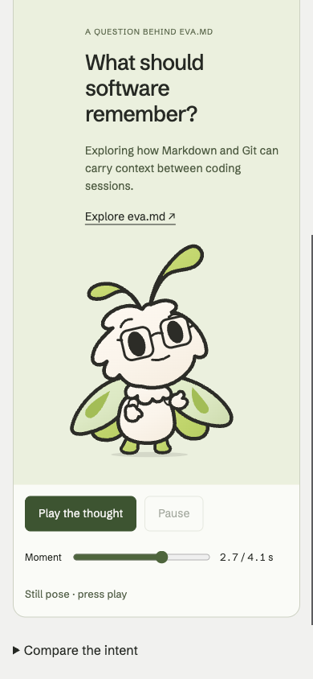
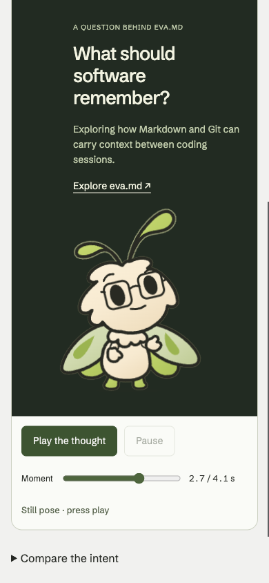
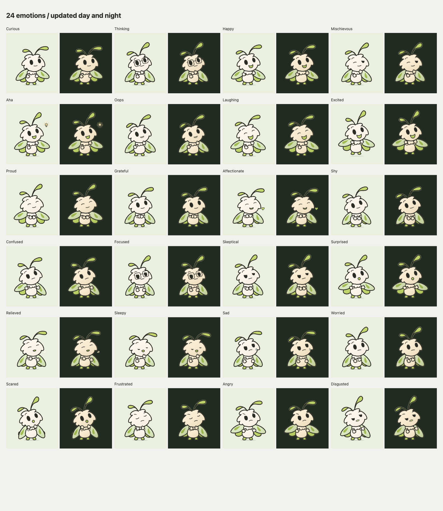

Nag / Character and motion / 7 November 2026
The work, and the honest verdict.
A warmer curiosity performance, quieter night lighting and more room for tiny gestures. The same innocent moth in both themes.
All 18 specialists accept the implemented local foundation with named limits. The 9/10 target has not been reached across the board.
The changes you can see.
Nag chose Investigate & share: notice the question, look closer, pause, then turn back with a tiny presenting mitten. The question connects the character to the real eva.md project. “One more thought” remains a restrained alternative.
The full collection remains 24 emotions. Three separate studies preserve the comparison: warm curiosity, a wry afterthought, and one mischievous peek. Surprise starts with the face before the wings; the excited hop now cushions after contact.
The night paint uses a quieter antenna highlight and softer broad shading. Head, body, hands, feet, wing shapes and numeric poses are shared across themes. The original raster references remain untouched.
A small character needs space.
The phone study now puts the question above and to the right of the moth. The existing figure gets more room, with a taller composition as the tradeoff. A 320px heading-wrap fix keeps the introduction readable. The authored sideways glance is less precisely aligned with the question in this stacked composition; that remains a staging refinement.


Small hand-and-ruff details remain a craft limitation at 96–128px. Use the day avatar as the universal small mark; the night variant needs more room. Neither sharper lighting nor larger anatomy substitutes for clear staging.
The skills now inform the workflow.
The entire panel and engineering team were asked to review all 17 installed Emil Kowalski skill descriptions and read the relevant skills in full. Each review records actual reading, practical changes and exceptions. This practice is preserved in the repository for the future website.
| Before | After | Why |
|---|---|---|
| Unconditional button hover styles in both pages; unconditional link hover in the curiosity study. | All local hover rules are inside (hover: hover) and (pointer: fine). Press feedback remains outside that query. | Hover is a capability, not a viewport size. Touch does not need to retain a simulated hover state. |
| Background and transform both transitioned for 150ms using an implicit CSS ease. Press and release used identical timing. | Only transform transitions: 140ms on press, 100ms on release, cubic-bezier(0.23,1,0.32,1). Background changes are immediate. | Immediate visible feedback and a faster release, using the supplied curve. Remove the paint-based background transition rather than adding machinery. |
| The studio native select used 14px text; input sizing was not explicit for coarse pointers. | Native selects and inputs use 16px under (pointer: coarse). Existing viewport metadata retains user zoom. | Address the small-field-text cause of focus zoom without disabling zoom or guessing the device from width. |
| Pressable controls relied solely on the browser default touch-action. | Buttons, links, summary, selects, native radios and their control labels use touch-action: manipulation. | Permit normal panning and pinch zoom while expressing that those tap targets do not require double-tap zoom delay. Native range gestures remain unchanged. |
| Button and radio-label text could be selected by a long press. | Only buttons, summary and radio control labels have user-select: none, with the Safari prefix. | Keep controls deliberate while prose, statuses, project context and ordinary links remain selectable/copyable. |
| The new curiosity page generic light hover background could override its primary button fill while its text stayed light. | An explicit dark primary hover/active background preserves the intended contrast. | Capability gating alone would preserve that source-supported color mismatch; fix the primary control state in the same narrow rule change. |
| Keyboard-focused buttons could inherit the same transform transition as pointer press feedback. | Focus-visible buttons keep immediate control feedback with no transform transition. The selected mascot performance is unchanged. | Separate frequent UI feedback from the intentionally requested animated content. Keyboard Play must continue to play the film. |
Character performances keep their own acting rhythm. Short UI budgets apply to controls; keyboard Play still plays the requested content. Expressive SVG morphs need measured evaluation, not an automatic replacement with generic transforms.
Honest scores, with their meaning.
These are scoped judgments from AI specialist agents, all configured as GPT-6 Astra with ultra reasoning. They are not audience research. Different scopes should not be averaged into one product score, and a target of 9 does not change a reviewer’s number.
| Specialty | Reviewer A | Reviewer B |
|---|---|---|
| Character brand director | 8.2/10 | 8.4/10 |
| Character performance director | 8.4/10 | 8.4/10 |
| Identity systems designer | 8.7/10 | 8.6/10 |
| Technical character animator and rigger | 8.7/10 | 8.5/10 |
| Interaction and accessibility designer | 8.8/10 | 8.5/10 |
| Audience and character-perception researcher | 8.2/10 | 8.3/10 |
| Storyboard, animatic and comic staging director | 8.2/10 | 8.4/10 |
| Visual development and lighting artist | 8.6/10 | 8.5/10 |
| Sound designer | 8.6/10 | 8.5/10 |
Character brand director
Reviewer A · 8.2/10
Independent editorial judgment of inspected local brand coherence, appealing character presence, truthful real-project association and personal-fit default. It is a strong foundation, below exceptional as a complete personal-brand application. It is not a motion-quality score, numerical audience result or calibrated comparison with another specialist.
- Final portrait improves scale, but character and Play lie below the first viewport; the authored screen-right glance is less literally aligned with the now-above question. Acceptable local-study tradeoffs remain open for future phone staging.
- At small full-figure sizes, the open mitten and hand/ruff/glasses cluster carry less specific meaning than the face. Bigger presentation does not itself prove an invitation is understood.
- The real eva.md question is a credible bridge to Nag's work. A specific verified decision or observation in his voice is still needed for a fuller authored project story.
- Use the day avatar as the universal small mark and give night more room. Wing omission is a crop tradeoff, not a demonstrated recognition failure.
- Owner preference is known; unfamiliar-human comprehension, attribution, attachment and delayed recall remain unmeasured.
- Normal-speed felt timing is not certified by this reviewer. Desktop active cadence is neither phone/GPU validation nor a proven SVG-cost diagnosis.
- Native menu keyboard commit, spoken screen-reader output and physical-phone interaction remain unverified.
- No publication, remote commit/push or deployment is included.
Partner challenge and response
Reviewer B · 8.4/10
Independent holistic craft judgment of the final local brand application from source, actual stills and selected decoded frames. Old narrow-phone compression is superseded; current tradeoffs are vertical exposure, less literal phone eyeline and introductory authorship. Avatar crop is a deliberate usage tradeoff, not a demonstrated recognition failure.
- No continuous normal-speed video or live playback judged by B. Decoded comparison frames show stage samples, not subjective timing or smoothness.
- No unfamiliar-human comprehension, Nag attribution, attachment or delayed recall result; authoring labels and explanations prime intent.
- No physical-phone, GPU or spoken-screen-reader validation. Native menu keyboard commit remains unverified.
- Focused desktop active-engine evidence reports mean 34.45ms intervals, p95 35ms and max 67ms with four above 50ms. It is neither 60fps proof nor a diagnosis of SVG cost.
- At 96–128px, ruff/mitten/glasses density remains. Larger phone staging improves visibility without proving that the hand uniquely communicates invitation.
- Final source report exists, but any historical score summaries should be reconciled by root during synthesis.
- Acceptance concerns local source, exports and continued design; it does not authorize publication, deployment, commit/push or a public identity change.
Character performance director
Reviewer A · 8.4/10
Independent craft score for authored intention, inspected pose relationships and sampled staging; no score for unseen continuous rhythm, real-phone smoothness or human comprehension. Final portrait supersedes the old narrowphone size criticism. Current gesture specificity, optional wry subtlety and phone eyeline limits remain.
- The sharing mitten is visible in the final portrait but its specific invitational meaning remains weaker than the glasses and face; tiny96–128px contacts remain dense.
- The authored screen-right investigation is less literally directed toward the question in the stacked phone composition. Final portrait legibility does not resolve that eyeline relationship.
- The optional wry beat remains subtle; an isolated mischievous still carries broad knowing affect more securely than the full pretend-sleep joke.
- No continuous normal-speed perception was performed by this reviewer. Sampled frames establish poses and authored progression, not felt weight or comic timing.
- No physical-phone/GPU, unprimed-human comprehension, attribution or recall evidence is claimed. Correct accessible descriptions do not establish spoken screen-reader output.
- The focused desktop active sample is119 intervals with mean34.45ms,p9535ms,max67ms and four above50ms. It neither proves production smoothness nor identifies SVG cost as the cause of prior mixed idle gaps.
- Acceptance covers the implemented local foundation only; no publication, remote commit/push, deployment or universal9/10 certification.
Partner challenge and response
Reviewer B · 8.4/10
Holistic craft judgment of visual acting construction, pose relationships, authored beat structure and sampled transitions. It is not a rating of unseen continuous comic timing, felt weight, real-device smoothness or human audience outcomes.
- The sharing mitten is more visible in the final portrait, but its specific invitation remains less determinate than the glasses and face; 96–128px inner contours remain dense.
- The phone question is above the character while the authored investigation looks principally screen-right. The final portrait trades a more literal eyeline relation for greater character legibility and vertical space; it does not resolve both.
- The wry afterthought is subtle at reduced size. The mischievous still conveys broad knowing/wink affect more securely than the full pretend-sleep narrative; this is a representation limit, not proof of a drawing error.
- No continuous normal-speed perception was performed by this reviewer. Authored beats and decoded frames do not establish felt weight, successful comic timing or perceived smoothness.
- No new unprimed-human comprehension, attribution, attachment or recall result exists. Owner preference establishes personal fit; performance labels and explanatory copy prime interpretation.
- Active desktop cadence is a 119-interval local sample (mean 34.45ms, p95 35ms, max 67ms, four intervals above 50ms), not physical-phone/GPU validation or a causal attribution of delay to SVG.
- Per-variant accessible descriptions and truthful reduced-motion labels are supported by source and browser records; native menu keyboard commit and spoken screen-reader output remain unverified.
- Acceptance is for the implemented local foundation and continued design. It is not publication, remote commit/push, deployment or a universal 9/10 rating.
Identity systems designer
Reviewer A · 8.7/10
Strong, cohesive static local identity and cross-surface craft. Final portrait staging, clean 320px heading and current phone-width header proof resolve concrete earlier limits. Small night-contour robustness and the remaining phone gaze/gesture relation prevent a stronger judgment. No audience or runtime smoothness score is implied.
- Use the day paper-ground avatar as the universal 32px mark. Night48 stems are less assertive; give night more room and keep night32 outside the recommendation.
- Small full-figure glasses/ruff/mitten details remain dense. The larger final portrait fixes cramped presentation, but does not prove an unfamiliar viewer reads the mitten as invitation.
- The phone portrait requires more scrolling and leaves the authored screen-right investigation glance less directly aligned with the stacked question. Accept it as the named local-study tradeoff, not a settled future website composition.
- No new unfamiliar-human association, comprehension or recall evidence; Nag's preference is personal-fit evidence only.
- No continuous normal-speed motion watched by this reviewer, physical-phone validation, live GitHub proof or spoken screen-reader output. Exact film frames and desktop cadence do not establish those results.
- Native OS menu keyboard commit remains unverified; no public GitHub change, push or deployment is approved by this vote.
Partner challenge and response
Reviewer B · 8.6/10
8.6/10 for the observed local identity and typography system. The narrow heading defect is resolved. I retain the holistic score because night48 robustness and the phone staging/gesture-specificity tradeoffs remain material to this lens; this is not an arithmetic deduction ledger or a nine-point certification. Missing human/device evidence constrains scope and confidence rather than demonstrating user failure.
- Owned night48 antenna connections remain visually weaker than day; use day universally at32 and favor night64 where space permits. Night32 is outside the recommendation, not an additional failed requirement.
- The portrait scene improves visible detail but costs vertical space; the first viewport does not show every control or the complete figure.
- The authored sideways investigation glance is less literally directed toward the question above it on the phone composition. The identity and question are co-present, but that does not prove the spatial story or invitation is understood.
- Mitten, ruff and glasses remain dense in96–128px full-figure reuse. Bigger portrait placement does not solve every small use.
- No unprimed human association, emotion comprehension, attachment or delayed-recall findings; owner preference and expert judgment are separate evidence.
- No continuous normal-speed motion appraisal by this reviewer, no physical-phone/GPU validation, no spoken screen-reader evidence, and no native-menu keyboard-commit verification.
- Current application craft is locally inspected, not published or verified in live GitHub. The active desktop cadence record is runtime evidence, not subjective smoothness.
Technical character animator and rigger
Reviewer A · 8.7/10
Strong implemented constrained-rig craft supported by source, recorded meaningful tests and actual sampled articulation/contact. Residual hand/ruff density and incomplete temporal/device verification remain. The score does not certify presented-frame rate, subjective landing weight or audience interpretation.
- Mitten/ruff/jaw contact silhouettes remain crowded in several poses, particularly at 96–128px. Larger portrait staging improves visibility without proving invitational meaning.
- The screen-right investigation glance is not literally aligned with the question in the stacked phone layout. Preserve this staging limitation for the next bounded study.
- Active local desktop Thinking callback intervals: 119 samples, mean 34.45ms, p95 35ms, maximum 67ms, four over 50ms. These do not establish a renderer cause, sustained 60fps, perceptual smoothness or physical-device performance. Paused-control one-second gaps prevent treating historical mixed gaps as proven active rig stalls.
- No uninterrupted normal-speed motion observation by this reviewer; sampled contact sheets and deterministic exports do not prove every intermediate pose, every transition or arbitrary future crop.
- Day remains the universal 32px avatar recommendation; the smaller night antenna connection is weaker. Preserve supported-size restrictions.
- Owner preference and expert review are not unprimed human emotion/attribution/recall evidence. Native-menu keyboard commit and spoken AT remain unverified.
- The 320px screenshot verifies upper-layout wrapping, not simultaneous visibility of the entire scene and controls. Future integration must recheck crop, lifecycle and device behavior.
Partner challenge and response
Reviewer B · 8.5/10
Strong implemented local rendering integrity and practical reuse with coherent sampled attachment and exports. Residual contact-density and incomplete continuous/device verification remain; the score does not certify presented-frame rate or normal-speed acting appeal.
- Mitten, jaw, ruff and glasses contours remain dense at compact expressive sizes. A larger portrait makes the mitten visible but does not prove a specific invitation reading.
- The stacked phone question is less literally aligned with the authored screen-right investigation glance; its extra vertical height also keeps the whole scene and controls outside the initial viewport.
- Night antenna connections remain weak at 32px; use the day avatar as the universal 32px asset and give night more room.
- Active Thinking callback evidence is local desktop only: 119 intervals, mean 34.45 ms, p95 35 ms, maximum 67 ms and four above 50 ms. This is not a presented-frame, physical-phone or GPU trace. Mixed idle/playback one-second gaps must not be attributed to SVG cost.
- Sampled PNGs, numeric tests and deterministic 30fps films do not certify continuous perceived motion or all transition/crop combinations. The final website integration needs its own lifecycle, crop and intended-device validation.
- Recorded accessible descriptions and reduced-motion state do not establish spoken screen-reader output or native OS menu keyboard commit.
- Owner preference and AI craft review are separate from unfamiliar-human comprehension, attribution, attachment and delayed recall. Those outcomes remain unmeasured.
Interaction and accessibility designer
Reviewer A · 8.8/10
The implemented interaction foundation is strong and the one demonstrated v3 semantic defect is fixed. Missing native-input, spoken-AT, real-device and visitor evidence prevents a comprehensive validation claim without proving a defect.
- Native OS menu keyboard commit remains inconclusive.
- Screen-reader spoken output is not captured.
- Phone screenshots/coarse-pointer emulation do not establish physical touch use.
- Portrait first-viewport discovery and narrow Both-mode expression recognition remain observed tradeoffs with untested human consequences.
- Current local cadence evidence is not subjective smoothness, phone/GPU validation or proof of SVG-caused stalls.
- No unfamiliar-human or return-use study has been performed.
Partner challenge and response
Reviewer B · 8.5/10
Strong local-study interaction supported by source, static visuals and bounded recorded behavior. B keeps its independent deduction for phone discovery/comparison tradeoffs and unobserved real-device/AT/newcomer-return paths. A different A score does not create an objection or justify changing this number.
- Native OS menu keyboard commit unverified
- Screen-reader spoken output unverified
- Physical-phone and 200% text/zoom paths not established here
- Continuous normal-speed live comfort not assessed
- Newcomer discovery, return use and reaction not observed
- Phone height, Both default and less literal stacked eyeline remain named design nuances
- Exact 30fps exports and active desktop callback intervals do not certify display smoothness or subjective timing.
- The old mixed-idle one-second gaps are not attributed to SVG cost.
- No audience outcome, accessibility-conformance result, publication or remote change is approved.
Audience and character-perception researcher
Reviewer A · 8.2/10
Subjective expert craft readiness of inspected static emotional staging and attribution in this local study. Independent deductions for quiet-pose separation, small night antenna continuity and scrolled-scene attribution remain visible.
- Audience comprehension, Nag attribution, delayed recall, attachment and population preference remain unscored. Nag's explicit Investigate & share choice is categorical personal-fit evidence only.
- Authoring labels and explanations prime intent. Future comprehension work requires separate neutral prompts and explicit exposure records; the current labels need not be removed from the local studio.
- Portrait views improve visible character size, but name/moth exposure differs with viewport and scroll. The authored screen-right eyeline is less literally aligned with the stacked question.
- Quiet held-pose families and the small sharing mitten retain subtle semantic distinctions; these are craft hypotheses, not measured human confusion.
- Night antenna stems are less robust at 32–48px. Accept the proposal's day universal 32px avatar and larger night usage without erasing that observed limitation.
- No continuous-motion perception claim is supported by this review. The active-only 119-interval local desktop sample does not establish physical-phone or GPU behavior and does not attribute earlier mixed idle gaps to SVG.
- Native-menu keyboard commit and spoken screen-reader output remain unverified. No remote publication or deployment is included.
Partner challenge and response
Reviewer B · 8.3/10
Strong, coherent visual association material and unusually clear evidence boundaries; not yet a neutral, exposure-controlled audience research stimulus. Ordinal specialist judgment within this narrow inspected scope, not an empirical success rate.
- No unfamiliar-human unprimed comprehension, name attribution, delayed recall, attachment or population-preference outcomes. All remain null.
- Owner Investigate & share selection is personal-fit evidence only; authoring labels and descriptive copy prime expert readings.
- Portrait staging improves inspectability but changes first-view exposure and does not fully resolve the screen-right glance relative to the stacked question. Natural exposure and cropped stimuli cannot be treated as equivalent.
- Small invitation-hand specificity, quiet emotion overlap and 32–48px night antenna continuity remain scoped craft limits; no observed human confusion or recognition loss is claimed.
- I inspected static and decoded frames, not continuous normal-speed motion. Active desktop cadence remains technical local evidence, not perceptual or phone/GPU validation.
- Physical-phone behavior, spoken screen-reader output and native dropdown keyboard commit remain unverified.
- No publication, remote commit/push or deployment is authorized by this vote.
Storyboard, animatic and comic staging director
Reviewer A · 8.2/10
Score of authored visual setup/payoff and directly inspected rendered staging. My independent deductions for offer specificity and phone eyeline-to-question alignment remain. Continuous rhythm and human response remain unscored.
- The presenting hand is visible but remains close to the ruff/forewing; its invitation is less specific than the face and glasses.
- Portrait staging improves character visibility while the screen-right/lower reading scan is less literally aligned with the question above. At 320 px the initial viewport postpones the face; this is a composition tradeoff, not an overflow finding.
- One-peek is a controlled alternative, not a proven comic improvement. Its isolated subtlety does not establish the continuous sequence's success or failure.
- I inspected source, final rendered stills, selected decoded sheets and metadata; I did not watch uninterrupted normal-speed performance. Continuous rhythm, weight and live smoothness are not certified.
- The active Thinking record is local desktop cadence evidence only: 119 intervals, mean 34.45 ms, p95 35 ms, maximum 67 ms, four above 50 ms. It neither proves physical-phone performance nor attributes older mixed idle/playback one-second gaps to SVG.
- No new unprimed-human comprehension, attribution, attachment or recall evidence; owner preference and authoring labels do not establish those outcomes.
- Physical-phone operation, spoken screen-reader output and native menu keyboard commit retain the proposal's separate validation limits.
Partner challenge and response
Reviewer B · 8.4/10
Strong authored notice/inspect/return/hold structure and inspected rendered staging with named nonblocking weaknesses in invitation specificity, peek-payoff clarity and phone composition. Continuous perceived rhythm remains not-yet-scored; the score is unchanged from my independent v4 review.
- The presenting mitten is visible but its invitation is less specific than the head return and glasses; a future bounded audition must preserve tiny anatomy and theme parity.
- At 320 px the character arrives below the introduction, controls and project text. In the stacked phone scene the authored right-then-lower scan is less literally aligned to the question above. Larger display size does not resolve either staging issue.
- One-peek is structurally economical but is not established as the stronger joke; retain it as a separate alternative to the original two-peek catalog performance.
- No normal-speed continuous perceptual inspection was performed by this reviewer. Decoded sheets, deterministic 30 fps export and active desktop cadence do not establish felt rhythm, smoothness or physical-device performance.
- No new unprimed human comprehension, attribution, attachment or recall results; authored labels prime the intended reading.
- Spoken screen-reader output and native OS keyboard commit remain unverified, and this vote adds no independent validation of them.
- No deployment, public GitHub change, remote commit/push or publication is authorized by this vote.
Visual development and lighting artist
Reviewer A · 8.6/10
Subjective static craft judgment, not precise measurement. Revised from 8.4 to 8.6 because directly inspected v4 portrait evidence resolves the earlier cramped-width application deduction; remaining contact density, phone eyeline/height and material tradeoffs remain. No uplift for consensus, owner preference or skills compliance.
- Dense small hand/ruff/glasses detail and intentional clasp contacts require careful future pose comparisons, not enlarged anatomy.
- Day is the universal 32px avatar; night antenna continuity is weaker at that size and needs more room.
- Portrait staging improves visible character detail but increases viewport height and weakens the literal screen-right-gaze relation to the question above.
- Matte material gain is modest; refined paint and the existing rim remain acceptable without extra texture or glow.
- No continuous-motion, physical-phone/GPU, spoken AT or unfamiliar-human outcome certification. Active desktop cadence records are not those proofs.
Partner challenge and response
Reviewer B · 8.5/10
Independent AI static drawing/contour/scale judgment preserved. Strong coherent appeal with remaining central detail density, minimum-size night connection and fine night-perimeter tradeoffs. It does not score continuous acting or audience response.
- Mitten/ruff/glasses density persists at small full-body sizes; paint does not resolve it. Intentional gratitude contact should be clarified, not universally separated.
- Day remains the universal 32px avatar. Night stems are visually weaker at that size and need more room.
- Night double contour/soft perimeter remains a minor accepted readability tradeoff; no broad rim reduction is proven better across scales.
- Current portrait stage improves drawing visibility but uses more height and leaves the screen-right investigation glance less literally aligned with the question above.
- No continuous perceptual-motion certification, physical-phone/GPU validation, spoken AT, native menu keyboard-commit proof or unfamiliar-human outcomes are inferred.
- Owner preference for Investigate & share remains personal-fit evidence, separate from audience comprehension.
Sound designer
Reviewer A · 8.6/10
Source restraint and sampled silent legibility; excludes continuous perceived rhythm, audio quality, audience response, all-24-performance certification and deployed-website quality.
- The portrait question/eyeline relation remains unresolved. Better size and readability do not establish fully resolved phone storytelling.
- The small sharing mitten can read as generic welcome in an isolated endpoint. This retained craft deduction matters especially to initial and reduced-motion still presentation; it is not an unprimed-observer result.
- Continuous perceived rhythm, audio quality, listening comfort, real-device performance, spoken assistive output and human audience outcomes remain unscored.
- The active-only Thinking cadence record is local desktop evidence: 119 intervals, mean 34.45 ms, p95 35 ms, max 67 ms and four above 50 ms. It neither diagnoses old mixed-idle gaps nor certifies subjective smoothness.
- Acceptance is for the implemented local foundation with named limitations, not publication, deployment, all-reviewer 9/10 certification or unbuilt future artwork.
Partner challenge and response
Reviewer B · 8.5/10
Strong implemented silence and attention-control craft, with clear sampled visual punctuation, held endings and deliberate replay. Below finished-signature quality because the phone composition breaks the authored direction of the question cue. This is a scoped source-and-rendered-frame score, not a rhythm/listening rating.
- Phone eyeline-to-question relation remains unresolved; higher portrait legibility does not resolve the authored screen-right cue.
- Sharing-hand semantics remain a bounded craft question; the tiny anatomy must be preserved.
- Continuous perceived rhythm, all audio/listening judgments, human repeat-visit comfort and physical-phone performance remain unscored.
- New active-only desktop cadence evidence narrows the older mixed record but does not establish live smoothness or explain older idle gaps.
- No new unprimed-human interpretation, attachment, memory or attribution evidence; labels prime interpretation.
Evidence and its limits.
Fifteen motion tests pass. The browser geometry comparison checked 567 poses with no geometry mismatches across the frozen rig, day and night. Current avatar/header exports and two deterministic 30fps films are preserved alongside editable source.
The focused active-playback sample averaged about 34ms between frames, with four gaps above 50ms and a 67ms maximum. Earlier mixed idle/playback samples included roughly one-second gaps. The active-only sample narrows that observation; it does not certify 60fps or physical-phone performance.
Normal-speed perception, native menu keyboard commit, spoken screen-reader output, physical-phone behavior and unfamiliar visitors’ emotional response remain separate validation needs. Frame sheets alone do not prove continuous motion feel. No audience recall or attachment result has been invented.
Frozen implementation source · Motion checks · Geometry evidence · Accessible descriptions and reduced motion

What remains before 9.
The strongest next craft question is the mitten silhouette: can the sharing gesture become more specific through pose and timing while keeping these tiny proportions? Supported small night applications need careful optical judgment. A real project story should carry a decision and a result, once verified material exists.
Those improvements need fresh evidence. The broader website, seasonal scenes and optional audio remain future work; this local study is the reusable foundation. Nothing has been published or deployed from this review.